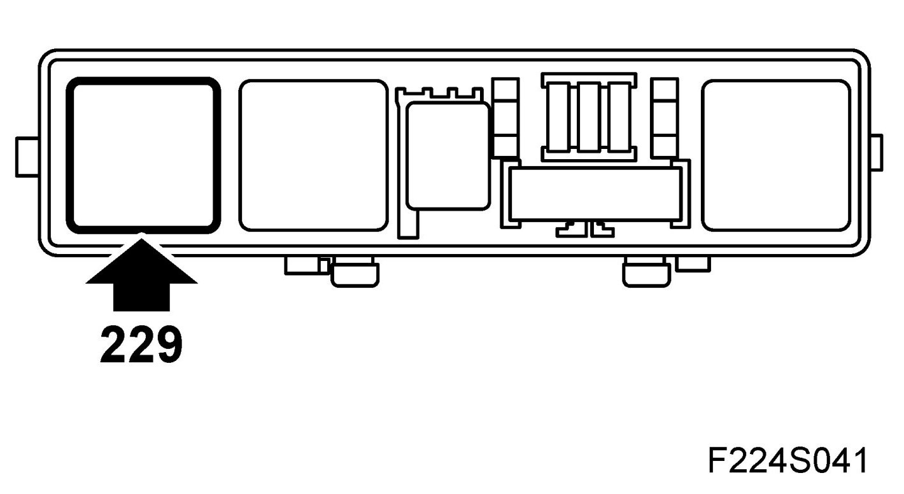
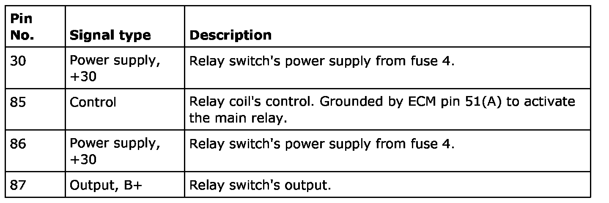

Main Relay (Computer/Fuel System): Description and Operation
Main Relay, Engine Management System (229), T8
Location
Main relay, engine control system (229)
Main task
The relay feeds ECM.
Type

Connection

When the ignition is switched "ON", +15 is supplied to control modules pins 19(A) and 2(A). The control module thereby grounds pin A1 and the main relay pulls. At the same time, the control module receives supply voltage on pins 48(A) and 64(A) from main relay pin 87. The control module supply is used internally to feed the throttle motor.
In addition to the control module, the main relay feeds the following components:
- Injector, cyl. 1-4 (206a-d)
- EVAP canister purge valve (321)
- Solenoid valve, turbo bypass (605)
- Charge air solenoid valve (179a)
- CDM (740)
- Ignition coil with integrated power stage, cyl 1-4 (320a-d)
- Mass air flow sensor (205)
- EVAP shut-off solenoid valve (588)
When the ignition is switched "OFF", the main relay is pulled for an additional 10 seconds to allow the throttle to assume a completely closed position.